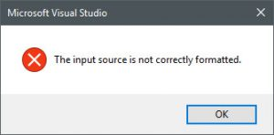

使用适用于Visual Studio 1.4.0的Orleans工具修复Visual Studio 2015
阿提拉·哈伊德里克(Attila Hajdrik)2017/3/10上午10:06:17
今天，如果两个社区成员安装了Orleans VSIX软件包的1.4.0版本，就会受到Visual Studio 2015问题的打击。我们有一个公开的问题可以跟踪的GitHub。如果您在Visual Studio 2017上安装了扩展程序，它将可以正常工作，只有2015年有此问题。我们看到的问题是您无法打开“工具和扩展”窗口，VS将显示此错误对话框：

在研究解决方案时，我们未发布有问题的版本，并发布了该扩展的较旧版本，该扩展不适用于Visual Studio 2017，但都不会使Visual Studio 2015无法使用。如果您被此问题所困扰，请按照以下步骤进行修复：
1)退出所有Visual Studio实例。
2)打开管理员Visual Studio开发人员命令提示符。
3)cd / D“％USERPROFILE％\本地设置，本地配置\微软\视觉工作室\14.0\扩展程序”
4)dir OrleansVSTools.dll / s
您将得到如下结果：
C：\ Users \\ Local Settings \ Microsoft \ VisualStudio \ 14.0 \ Extensions \ pxzkggpq.50t的目录
2017/03/10下午02:36 18,608 OrleansVSTools.dll
1个文件18,608字节
5)将完整目录路径复制到剪贴板。
6)rmdir“” / q / s
确保您仍在Extensions目录中。
7)删除*.cache
8)devenv /设置
这可能会持续几分钟...请耐心等待。
现在，您可以启动Visual Studio 2015，并验证“扩展”对话框是否打开并且一切正常。
如果您为Visual Studio 2015配置了特殊的根后缀，则必须为该特定实例执行这些命令，因此不在14.0中执行，而可能在14.0Exp目录中执行。
更新2017年3月17日
我们发布了更新的VSIX，该VSIX可与VS2013，VS2015，VS2017一起正常使用：Microsoft Orleans Visual Studio工具